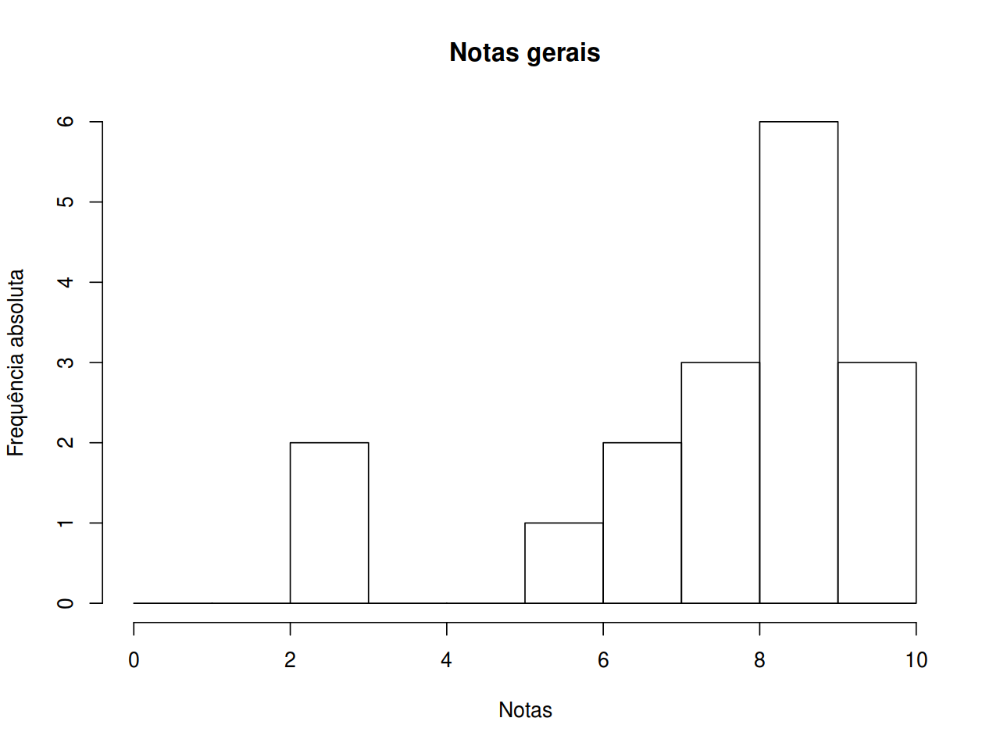

Notas
Histograma e box plot geral
## Grafico geral das notas
breaks <- 0:10
## table(cut(notas$S1, breaks = breaks,
## right = FALSE, include.lowest = TRUE))
## Junta notas de todas as sabatinas em um único vetor
notas.all <- do.call(c, notas[, notas.col, drop = FALSE])
hist(notas.all, breaks = breaks, right = FALSE, include.lowest = TRUE,
main = "Notas gerais", xlab = "Notas", ylab = "Frequência absoluta")
## boxplot(notas.all, horizontal = TRUE, ylim = c(0, 10),
## col = "lightgray", add = TRUE, at = 0)Resumo dos cinco números, média, desvio-padrão, e número de provas não realizadas (NA):
statm <- function(x){
res <- c(fivenum(x),
mean(x, na.rm = TRUE),
sd(x, na.rm = TRUE),
sum(is.na(x)))
names(res) <- c("Min", "Q1", "Q2", "Q3", "Max", "Média", "s", "NAs")
return(res)
}
round(statm(notas.all), 2) Min Q1 Q2 Q3 Max Média s NAs
2.10 6.70 8.00 8.60 9.10 7.18 2.14 22.00 Resumos por prova
Box plot de cada prova
## Boxplots comparando as notas entre sabatinas
boxplot(notas[, notas.col], ylim = c(0, 10), ylab = "Notas")Resumo dos cinco números, média, desvio-padrão, e número de provas não realizadas (NA):
round(apply(notas[, notas.col, drop = FALSE], 2, statm), 2) P1 P2 P3
Min 2.10 5.10 7.50
Q1 5.25 6.20 8.00
Q2 8.90 6.70 8.30
Q3 9.05 7.20 8.50
Max 9.10 7.20 8.60
Média 6.96 6.48 8.18
s 3.21 0.88 0.44
NAs 6.00 8.00 8.00Notas individuais
##----------------------------------------------------------------------
## Antes do exame (Ex)
## Cria a coluna Situacao
notas$S <- "Ap"
notas$S[notas$M >= 4 & notas$M < 7] <- "Ex"
notas$S[notas$M < 4] <- "Re"Após o exame: as notas dos exames estão na coluna E. A média final (MF) é a mesma para quem não fez exame, e é a média entre a média final (M) e a nota do exame (E) para quem fez exame. A média final arredondada (MFA) é a nota que será lançada no sistema. A coluna SF mostra a situação final dos alunos após o exame.
##----------------------------------------------------------------------
## Após exame (Ex)
## Calcula média final (MF), que é média da nota final com a nota do
## exame (apenas para os que ficaram de exame)
notas$MF <- notas$M
notas$MF[notas$S == "Ex"] <- (notas$M[notas$S == "Ex"] +
notas$E[notas$S == "Ex"])/2
notas$MF <- round(notas$MF, 2)
## Calcula a média final arredonadada (MFA), que é a média multiplicada por
## 10 e arredondada para cima (é como será lançada no sistema)
notas$MFA <- ceiling(notas$MF*10)
## Cria a coluna Situacao final (SF), que indica a situação após exame
notas$SF <- "Ap"
notas$SF[notas$MFA < 50] <- "Re"
## Arruma a ordem das colunas
cols <- c(1:4, 6:7, 5, 8:10)
notas <- notas[, cols]
## Mostra tabela
kable(notas, align = "c", digits = 2)| Matricula | P1 | P2 | P3 | M | S | E | MF | MFA | SF |
|---|---|---|---|---|---|---|---|---|---|
| 20123200 | 2.1 | NA | NA | 0.70 | Re | NA | 0.70 | 7 | Re |
| 20131111 | 9.0 | 7.2 | 8.0 | 8.07 | Ap | NA | 8.07 | 81 | Ap |
| 20131487 | 8.9 | NA | NA | 2.97 | Re | NA | 2.97 | 30 | Re |
| 20132481 | 9.1 | 7.2 | 8.5 | 8.27 | Ap | NA | 8.27 | 83 | Ap |
| 20136648 | 8.0 | 5.1 | 8.3 | 7.13 | Ap | NA | 7.13 | 72 | Ap |
| 20147987 | 9.1 | 6.2 | 8.6 | 7.97 | Ap | NA | 7.97 | 80 | Ap |
| 20148728 | NA | NA | NA | 0.00 | Re | NA | 0.00 | 0 | Re |
| 20150476 | NA | NA | NA | 0.00 | Re | NA | 0.00 | 0 | Re |
| 20154698 | 2.5 | 6.7 | 7.5 | 5.57 | Ex | 6 | 5.79 | 58 | Ap |
| 20157864 | NA | NA | NA | 0.00 | Re | NA | 0.00 | 0 | Re |
| 20158854 | NA | NA | NA | 0.00 | Re | NA | 0.00 | 0 | Re |
| 20161294 | NA | NA | NA | 0.00 | Re | NA | 0.00 | 0 | Re |
| 20161460 | NA | NA | NA | 0.00 | Re | NA | 0.00 | 0 | Re |

Este conteúdo está disponível por meio da Licença Creative Commons 4.0